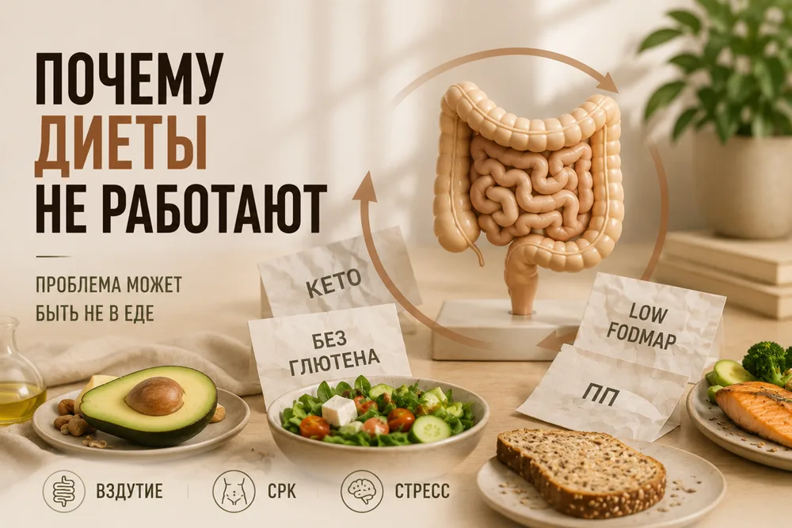

Вы меняете диеты, а кишечник всё равно не лучше. Почему?



Отказались от молока, потом от хлеба, попробовали кето, низкий FODMAP — стало легче. А потом вздутие, боли и запоры вернулись.
Каждый день я вижу пациентов с одной фразой: «Я исключил всё, что можно. Почему мне всё равно плохо?»
Почему диеты не работают
Большинство хронических заболеваний кишечника связаны не только с едой. Исключение продуктов даёт симптоматическое облегчение, но не устраняет основу заболевания.
Почему становится легче
- Снижается количество еды и процесс брожения — вздутие уходит временно.
- Исключение триггеров при лёгкой непереносимости лактозы или фруктозы.
- Появляется ощущение контроля, снижается тревога — эффект плацебо.
- Начало диеты совпадает с ремиссией, и улучшение ошибочно приписывают питанию.
В чём риски
Безглютеновая диета без показаний — дефицит железа, фолиевой кислоты и клетчатки. Low-FODMAP — дефицит пребиотиков, кальция и витамина D. Кето — нехватка микроэлементов. Длительные ограничения снижают разнообразие микробиоты, а тревога вокруг еды может привести к орторексии.
Нужен системный подход
Диета — часть плана, а не единственное лечение. Сначала надо понять причину: вздутие часто связано с моторикой или висцеральной чувствительностью, а не с брожением. Пробиотики подбираются по штаммам, стресс требует психотерапии, а режим питания — отдельной работы.
И до назначения диеты нужна диагностика: многие болезни ЖКТ на ранней стадии протекают скрыто.
Ваш врач Гондусов Д.В. 

Статья носит информационный характер и не заменяет консультацию врача. Не занимайтесь самодиагностикой.